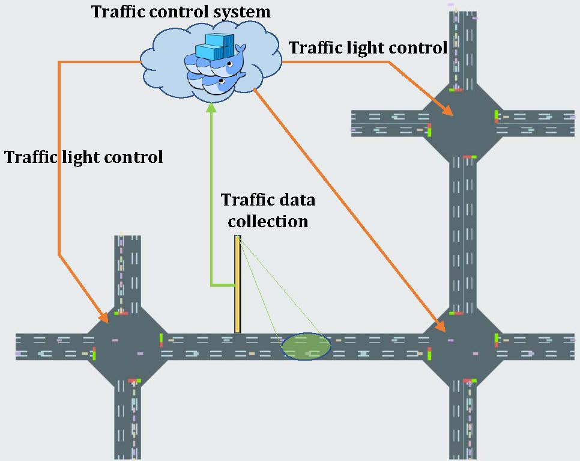

|
Research
|  |
Intelligent Transportation System
An intelligent transportation system (ITS) is an advanced application which aims to provide innovative services
relating to different modes of transport and traffic management and enable users to be better informed and
make safer, more coordinated, and 'smarter' use of transport networks. Our research mainly aimed at ITS, we use machine learning,
operation optimization and network system technology to improve traffic operation efficiency and user experience.
|
Distributed Machine Learning
Overview:
- C. Li, X. Zeng, M. Zhang, and Z. Cao, "PyramidFL: A Fine-grained Client Selection Framework for Efficient Federated Learning," in Proc. of ACM MobiCom, 2022.
- A. Li, J. Sun, P. Li, Y. Pu, H. Li, and Y. Chen, "Hermes: An Efficient Federated Learning Framework for Heterogeneous Mobile Clients," in Proc. of ACM MobiCom, 2021.
- Z. Chai, Y. Chen, A. Anwar, and et al., "FedAT: A High-Performance and Communication-Efficient Federated Learning System with Asynchronous Tiers," in Proc. of ACM SC, 2021.
- F. Li, X. Zhu, H. V. Madhyastha, and M. Chowdhury, "Oort: Efficient Federated Learning via Guided Participant Selection," in Proc. of USENIX OSDI, 2021.
- Y. G. Kim and C.-J. Wu, "AutoFL: Enabling Heterogeneity-Aware Energy Efficient Federated Learning," in Proc. of ACM MICRO, 2021.
Task Scheduling & Resource Management
Task Scheduling
- H. Mao, M. Schwarzkopf, S. Venkatakrishnan, Z. Meng, and M. Alizadeh, "Learning Scheduling Algorithms for Data Processing Clusters," in Proc. of ACM SIGCOMM, 2019.
- R. Grandl, and et al., "Graphene: Packing and Dependency-aware Scheduling for Data-Parallel Clusters," in Proc. of USENIX OSDI, 2016.
- R. Grandl, and et al., "Altruistic Scheduling in Multi-Resource Clusters," in Proc. of USENIX OSDI, 2016.
- J. Rasley, and et al., "Efficient Queue Management for Cluster Scheduling," in Proc. of ACM EuroSys, 2016.
- V. Jalaparti, and et al., "Network-Aware Scheduling for Data-Parallel Jobs: Plan When You Can," in Proc. of ACM SIGCOMM, 2015.
- K. Karanasos, and et al., "Mercury: Hybrid Centralized and Distributed Scheduling in Large Shared Clusters," in Proc. of USENIX ATC, 2015.
- X. Ren, and et al., "Hopper: Decentralized Speculation-aware Cluster Scheduling at Scale," in Proc. of ACM SIGCOMM, 2015.<>
- R. Grandl, G. Ananthanarayanan, S. Kandula, S. Rao, and A. Akella, "Multi-Resource Packing for Cluster Schedulers," in Proc. of ACM SIGCOMM, 2014.
Resource Management:
- A. Mirhosseini, S. Elnikety, and T. F. Wenisch, "Parslo: A Gradient Descent-based Approach for Near-optimal Partial SLO
Allotment in Microservices," in Proc. of ACM SoCC, 2021.
- A. F. Baarzi and G. Kesidis, "SHOWAR: Right-Sizing and Efficient Scheduling of Microservices," in Proc. of ACM SoCC, 2021.
- K. Rzadca, P. Findeisen, and et al., "Autopilot: Workload Autoscaling at Google," in Proc. of ACM EuroSys, 2020.
- Y. Peng, and et al., "Optimus: An Efficient Dynamic Resource Scheduler for Deep Learning Clusters," in Proc. of ACM EuroSys, 2018.
- A. Chung, and et al., "Stratus: cost-aware container scheduling in the public cloud," in Proc. of ACM SoCC, 2018.
- S. A. Jyothi, and et al., "Morpheus: Towards Automated SLOs for Enterprise Clusters," in Proc. of USENIX OSDI, 2016.
- M. Chowdhury, and et al., "HUG: Multi-Resource Fairness for Correlated and Elastic Demands," in Proc. of USENIX NSDI, 2016.
Application
Robotics
- S. Laki, et al., "In-Network Velocity Control of Industrial Robot Arms," in Proc. of USENIX NSDI, 2022.
- B. Liu, et al., "Federated Imitation Learning: A Novel Framework for Cloud Robotic Systems With Heterogeneous Sensor Data," IEEE Robotics and Automation Letters, 2020.
- B. Liu, et al., "Lifelong Federated Reinforcement Learning: A Learning Architecture for Navigation in Cloud Robotic Systems," IEEE Robotics and Automation Letters, 2019.
- G. Hu, et al., "Cloud Robotics: Architecture, Challenges and Applications," IEEE Network, 2012.
- R. Arumugam, et al., "DAvinCi: A Cloud Computing Framework for Service Robots," in Proc. of IEEE ICRA, 2010.
Smart Transportation:
- H. Wei, et al., "Intellilight: A reinforcement learning approach for intelligent traffic light control," in Proc. of ACM KDD, 2018.
- Y. Ye, et al., "FedLight: Federated Reinforcement Learning for Autonomous Multi-Intersection Traffic Signal Control," in Proc. of IEEE DAC, 2021.
|
{kind=link}